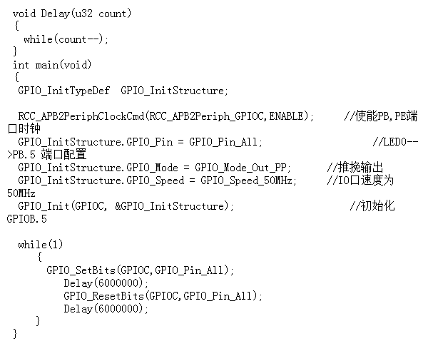
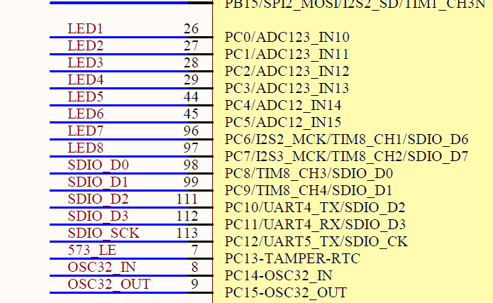

- 标准工程模板的创立：从stm32固件库提取一些预设文件，函数库，来使函数能够正常的与固件进行连接：类似于驱动？
- 芯片通过输出高低电平来达到控制电路的目的。
- 通过改变中的GPIO_Pin_All来控制哪个led灯闪，将GPIOC改为GPIOD，灯不闪了。 这是因为led灯是配置在PC管脚上的。
- 在使用单片机元件时需要对端口进行初始化配置，例如led灯闪烁实验，需要先对led灯进行初始化配置，又例如蜂鸣器实验，需要先对蜂鸣器进行初始化配置。
- 初始化led灯和蜂鸣器的函数完全一致，只是端口和管脚不同
- 寄存器，库函数？时钟